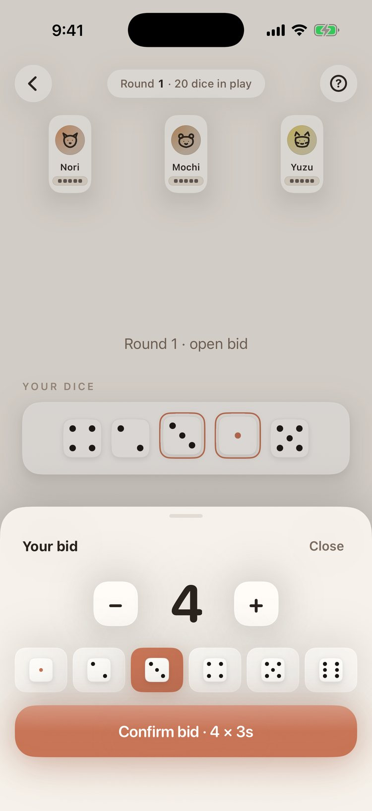

Liar's Dice — a bluffing dice game for iPhone & iPad
Five dice.
One bid.
Somebody's lying.
The dice game you play around a kitchen table, built to feel like it belongs on your phone. Bid on what's hiding under every cup, raise the stakes, and call the liar — solo against AI, on one phone passed around, or in a private room with up to six friends.
Free · iPhone and iPad · No ads, no tracking
